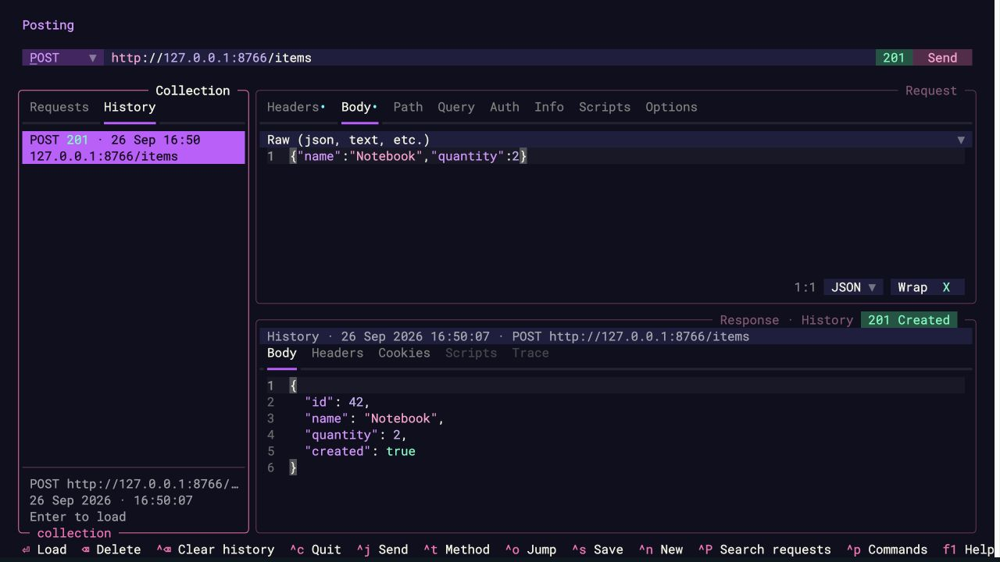
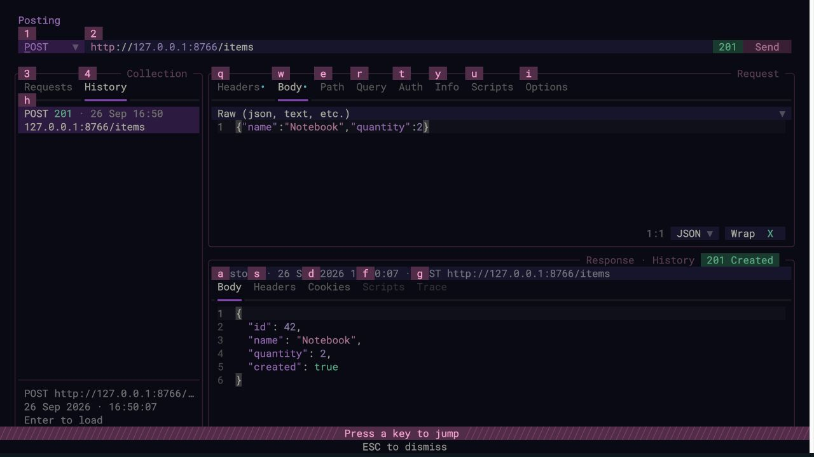
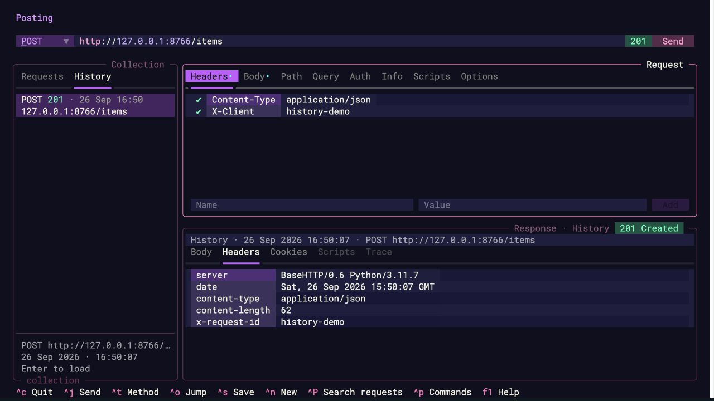
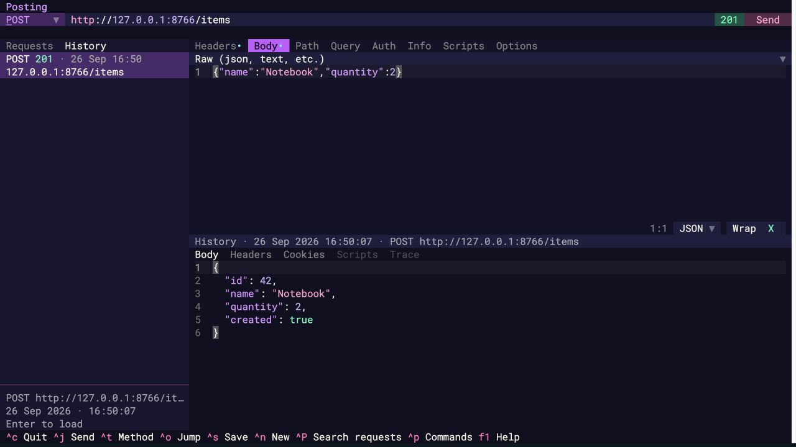
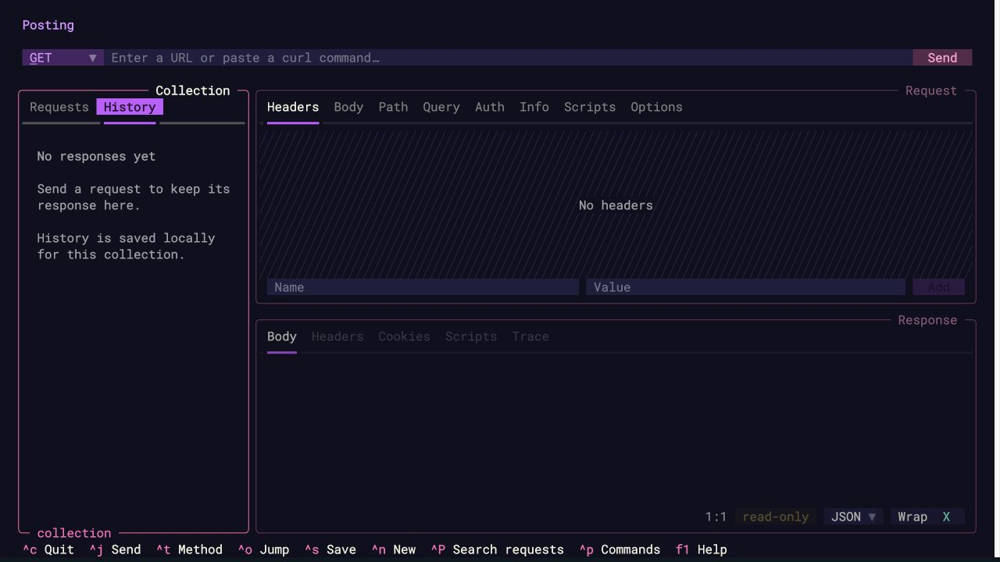

History verification¶
Verified on macOS with Python 3.11.7 and Textual 6.1.0.
Automated checks¶
PATH="$PWD/.venv/bin:$PATH" env -u NO_COLOR make test ARGS='-q'
Result: 267 passed, 4 skipped across the Makefile's parallel and serial phases
(266 passed / 4 skipped in parallel; 1 passed in serial). NO_COLOR was unset so
snapshots use the application's normal theme.
- Nine storage tests cover persistence, byte-for-byte headers (including repeated and non-ASCII headers), binary/compressed bodies, cookies, timing, private file permissions, collection isolation, entry/byte limits, deletion, corrupt databases, request snapshot immutability, and migration of response-only databases.
- Sixteen feature UI snapshots cover empty/loaded states in both spacing modes, persistence, full request loading, live-response transitions, disabled recording, deletion/confirmation, narrow/right sidebar layout, storage failures, legacy entries, send-time capture before scripts and in-flight edits, and keyboard/jump navigation.
- Additional UI tests check empty/raw/form bodies, disabled form rows, safe detachment from a previously open collection file, and loading/resending missing script paths.
- Existing sidebar snapshots were updated for the tabs and stable sidebar width. Standard, compact, narrow, and jump-mode snapshots were rendered and visually inspected.
Merged origin/main at 3447d8dd and reran the full suite after integration.
Seven snapshots were updated for the reordered jump hints and the new sidebar in
incoming curl-import/request-search tests. The request-search test now waits for
its palette input to mount before typing, avoiding a race under parallel load.
Two new History integration cases cover query data stored in either the URL or
parameter list, duplicate values, disabled rows, variable expressions, reserved
characters, editing after loading, and keeping the archived record unchanged.
The tab label is Requests, with jump key 3; History keeps 4.
All 76 affected snapshots were refreshed for the shorter label, followed by another
full passing test run. All five screenshots below were recaptured through computer use.
Computer-use verification¶
Ran the real Posting application through textual serve and used computer-use keyboard
and mouse actions in the local browser terminal. All HTTP traffic used a disposable
local test server on 127.0.0.1:8766; screenshots contain only synthetic test data.
The initial response-history checks covered the empty state, HTTP 200/404 entries, newest-first order, mouse/keyboard selection, and restart persistence. The extended request-loading walkthrough used a POST request with a JSON body, custom headers, and saved request options. The server returned HTTP 201 and a JSON response.
- Used
Ctrl+O,Tab,Enterto load the sample collection request, thenCtrl+Jto send it. - Changed the URL editor and used
Ctrl+O,4to activate History. - Pressed
Down, thenEnter. The original POST URL, headers, body, options, and response were loaded, with focus left in History and no additional HTTP request. - Opened jump mode with History visible and checked its
hlist target and4tab target. Used jump mode to inspect the loaded request body and response headers. - Restarted Posting, then loaded both panes from disk using
Ctrl+O,4,Down,Enter. - Repeated loading in compact mode.
- After merging
main, verifiedCtrl+O,3,Downtargets Requests andCtrl+O,4,Downtargets History. Loaded withEnterand revisited the list withCtrl+O,h; refreshed the jump-mode screenshot. - Edited the URL with duplicate query values and confirmed both Query rows appeared. Loaded the saved history entry again and verified its original URL and empty Query table replaced the draft values while its response remained visible.
Deletion/confirmation, missing scripts, original variable expressions, in-flight edits, and not overwriting previously open collection files are covered by automated tests.
Keyboard walkthrough¶
If the sidebar is hidden, first press Ctrl+H.
| Action | Keys |
|---|---|
| Open History | Ctrl+O, then 4 |
| Enter the history list from the tabs | Down or j |
| Jump straight to a visible, nonempty history list | Ctrl+O, then h |
| Highlight an entry without loading | Up/Down or k/j |
| Highlight first/last entry | g/G |
| Load request and response, replacing editor contents | Enter or l |
| Send the loaded request explicitly | Ctrl+J |
| Return to Requests | Ctrl+O, then 3 |
| Delete one entry / clear history with confirmation | Backspace / Ctrl+Backspace |
| Show contextual History help | F1 |
Screenshots¶
Loaded request body and response¶

History jump targets¶

Request and response headers after restart¶

Compact layout¶

Empty history¶
